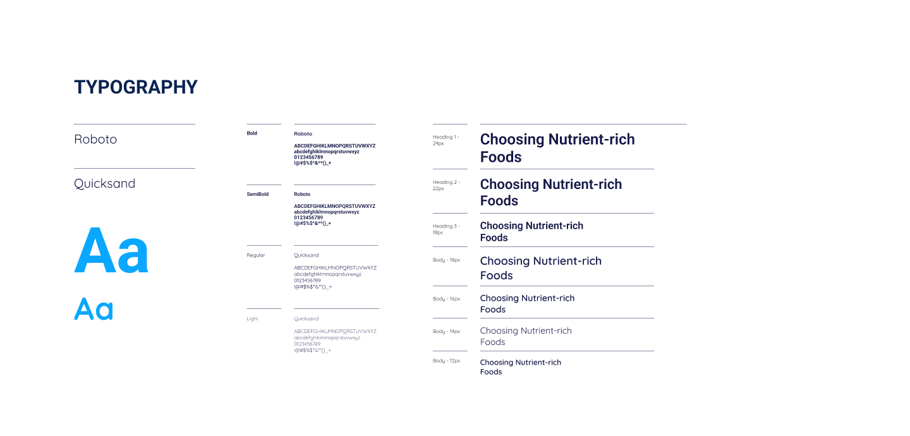
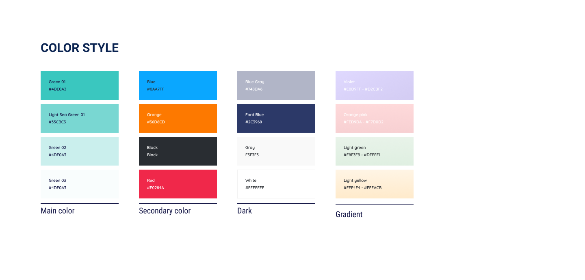
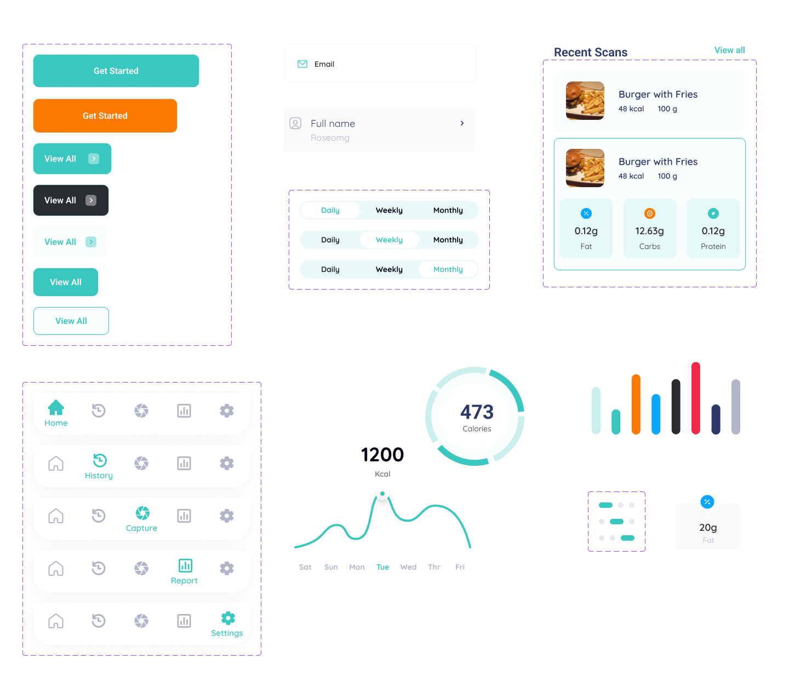

Overview
FoodAI is a mobile application that scans meals to display their protein, carbs, and fats content. It generates detailed reports, allowing users to track their daily and weekly nutritional consumption, helping them maintain a balanced diet.
I led the redesign of the FoodAI mobile app at Bitskraft, enhancing its user experience and interface.
Background
I was assigned the task of redesigning the FoodAI app, a system that had already been built by developers at Bitskraft. Initially, I was informed that the changes would be minimal, focusing only on adjusting fonts and colors. However, upon reviewing the existing design, I identified opportunities to enhance the overall user experience, prompting a more comprehensive redesign.
Old Design Screens
The original app only offered a social media sign-in option, leading users directly to a page where they could capture or upload images, without any additional onboarding or guidance.
The original screens were very basic, with no clear focus on user experience or navigation, leaving the app feeling unstructured and difficult to use.
Redesign Process
- Identifying key issuses
- Research and User Feedback
- Wireframing and Prototyping
- Creating a Design System
- Typography
Defined a modern, clean font hierarchy for clarity.
 - Color Palette
Selected colors that enhance readability and visual appeal.
 - UI Components
Buttons, input fields, and other elements were standardized for a more intuitive interface.
 - Icons and Visual Assets
- Final UI Screens
Before starting the redesign, I analyzed the original app's limitations. The lack of clear navigation, minimal visual hierarchy, and absence of focus on user needs were identified as major areas for improvement.
To guide the redesign, I conducted research and gathered feedback from potential users, focusing on improving usability, visual appeal, and navigation flow.
I developed wireframes to explore new layouts and user flows, ensuring the redesign addressed key pain points. Prototypes were created for early testing and feedback.
Design System and Visual Enhancements
I developed a cohesive design system in Figma, establishing a consistent style across the app. This included typography, color schemes, buttons, and form elements.
Icons were used to improve visual communication and enhance user experience, making the app more intuitive and engaging.
I applied the design system to redesign the key screens, ensuring consistency in visuals and enhancing the user experience.
Testing and Iterations
- Usability Testing
- Users found the nutrition tracking feature buried under settings inconvenient and difficult to access.
- There was confusion about logging food entries in the history versus tracking current intake.
- Major Changes Before and After Iteration
- Before: The nutrition tracking feature was located under the settings menu, requiring users to navigate through multiple steps to access it.
- After: I moved the nutrition tracking feature to open directly after login everyday, allowing users to track their daily intake immediately without navigating to settings.
- Before: Users could only log food entries into a history log, which was not ideal for those who wanted to track only their recent intake.
- After: Added a "I Ate This" button on the food description page, enabling users to quickly and easily log their current food intake without affecting the history logs.
After completing the initial redesign, I conducted usability testing with a sample group of users to ensure the new interface was intuitive and met their expectations. Users were asked to perform key tasks such as signing in, capturing images, and tracking nutrition.
Key Insights from testing
Nutrition Tracking Accessibility
Food Tracking vs. History Logs
Conclusion
The redesign of the FoodAI app was a transformative process, evolving from a basic, limited interface to a more user-friendly, visually appealing, and functional product. By focusing on simplifying the user journey, improving navigation, and enhancing the app's visual appeal, the final design significantly improved the overall user experience. This project challenged me to balance technical constraints with design creativity, all while adhering to the needs of the end user.
Key Takeaways
- User-Centered Design is Key: Understanding user needs and gathering feedback was crucial in shaping the direction of the redesign. This ensured that the final product was both functional and engaging.
- Iteration Improves Results:Testing and refining the design based on user feedback led to a more effective and intuitive app.
- Collaboration is Essential: Working closely with developers helped align design with technical limitations while ensuring the final product maintained its integrity.